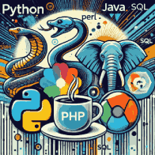
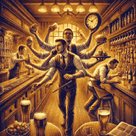

Tuomas Hyötyniemi
Portfolio
Paikka missä luovuus ja logiikka kohtaavat!
Ohjelmoinnin intohimoinen opiskelija
 Täällä jokainen idea löytää
muotonsa, ja intohimo ohjelmointiin herää eloon rivikerrallaan. Olen
Tuomas — tietojenkäsittelyn opiskelija ja ohjelmoinnin
intohimoinen opiskelija Haaga-Helian
ammattikorkeakoulusta.
Täällä jokainen idea löytää
muotonsa, ja intohimo ohjelmointiin herää eloon rivikerrallaan. Olen
Tuomas — tietojenkäsittelyn opiskelija ja ohjelmoinnin
intohimoinen opiskelija Haaga-Helian
ammattikorkeakoulusta.
C++ — tehokkuuden ja estetiikan kaunis liitto
C++ on minulle enemmän kuin vain ohjelmointikieli — se on kaunis yhdistelmä tehokkuutta, estetiikkaa ja loputonta potentiaalia. Rakastan syventyä sen maailmaan, jossa voin toteuttaa tehokkaita ja optimoituja ratkaisuja, jotka ovat yhtä aikaa elegantteja ja tarkkaan harkittuja.
Uusien kielten viehätysvoima
Vaikka sydämeni sykkii plusplussalle, en pelkää tarttua uusiin haasteisiin. Python ja JavaScript ovat kielet, joiden joustavuus ja monipuolisuus vievät minut mukanaan yhä uusiin suuntiin. Olen myös työskennellyt PHP:n, Javan ja SQL:n parissa, laajentaen osaamistani ja löytämällä uusia tapoja ratkaista ongelmia ja rakentaa innovatiivisia ratkaisuja.
Commodore 64:sta nykyhetkeen — matka ohjelmoinnin maailmassa
Ohjelmoinnin maailma avautui minulle jo lapsena, kun aloin koodata Commodore 64:lla. Tämä varhainen kokemus sytytti palon koodaamiseen, joka on kulkenut mukana koko elämäni. Lisäksi videopeleillä on aina ollut erityinen paikka sydämessäni, ja ne ovat vaikuttaneet vahvasti tapaani ajatella ongelmanratkaisua ja luovuutta — inspiroiden minua etsimään yhä parempia tapoja koodata ja luoda omia interaktiivisia kokemuksia.
Ravintola-alan opit ohjelmoinnin palveluksessa
 Ennen kuin lähdin ohjelmoinnin maailmaan ammattimaisesti, työskentelin pitkään ravintola-alalla, suurimman osan ajasta vuoropäällikön asemassa. Tämän kokemuksen ansiosta olen oppinut tiimityöskentelyn, johtamisen ja paineensietokyvyn merkityksen — taidot, jotka auttavat minua myös ohjelmoinnissa ja projektityöskentelyssä.
Monipuolinen ohjelmoija — kielten kirjo hallussa
Uskon vahvasti siihen, että ohjelmoinnissa estetiikka ja toimivuus kulkevat käsi kädessä. Tavoitteeni on rakentaa ratkaisuja, jotka eivät ainoastaan toimi, vaan inspiroivat ja ylittävät odotukset. Jokainen projekti on minulle mahdollisuus oppia, luoda ja kasvaa — ja toivon, että voimme tehdä sen yhdessä.
Yhteistyöhön valmis — otetaan yhteyttä ja luodaan yhdessä
Ota yhteyttä — luodaan yhdessä jotain, joka kestää aikaa ja jättää jäljen. Täällä ideat muuttuvat todellisuudeksi, ja jokainen haaste on mahdollisuus luoda jotain suurta!